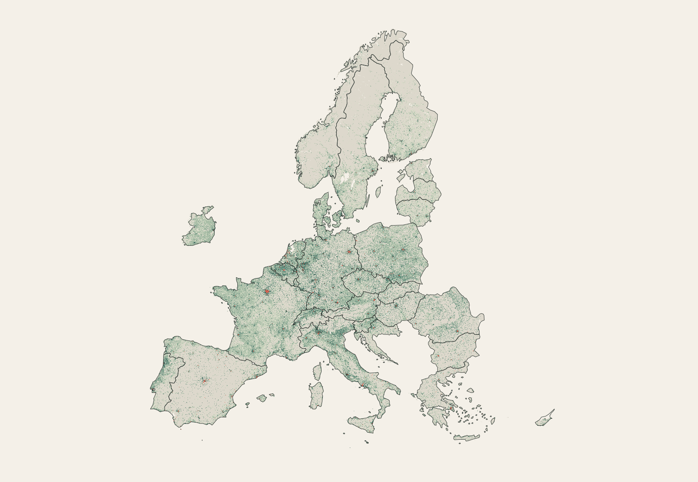
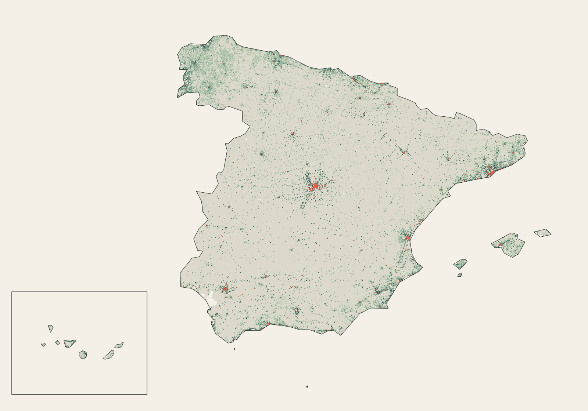

Thirty countries · one grid
Empty country,
dense country?
Spain is sparsely populated. But that does not mean Spaniards live at low density.
The familiar number
Spain looks sparse.
Divide the census population by the country’s land surface and Spain sits in the lower half of this 30-country comparison. The calculation is correct, but it gives every square kilometre equal weight.
02
Population on a grid
From an average to a pattern.
The harmonised census grid places the population into the same one-kilometre squares. Spatial patterns emerge.

Populated territory
People appear in just — of Spain’s land.
Only Norway and Bulgaria have less populated land than Spain. Most of Spain is empty.
The resident’s viewpoint
Average density = —.
Median resident’s cell density = —.
From the resident’s viewpoint, Spain becomes the densest country in the comparison. The contrast separates density measured across the land from the density where people actually live.
So little land?
Half of Spain’s population fits into — of its land.
Even 90% of the population lives in just — of the total territory—the smallest share in the comparison.
06
One population, many densities
Where does each country’s population sit on the density scale?
These distributions show the share—or number—of residents living in each 1,000-person density band. Compare the focus countries, then open the view to all 30.
07
Center, periphery and void
Sparse territory. Concentrated settlement.
Madrid forms a dense island in the centre. Barcelona and Valencia extend the Mediterranean chain; concentrations also trace the Basque and Cantabrian north, Galicia and Andalusia. Between them lies a broad, lightly populated interior.

The useful distinction
Spain has a low density of people across land—and a high density of people around other people.
Method & limits
Source. Eurostat/GISCO Census Grid 2021 V3.0, released 30 May 2026. The analysis uses final data reported by 30 EU and EFTA countries in ETRS89-LAEA (EPSG:3035).
Borders and coasts. Country-specific source files assign each country’s population and land contribution to shared cells. Reported LAND_SURFACE, rather than full-cell counts, defines national territory.
Confidentiality. Values marked confidential or unavailable are never changed to zero. Geometryless unallocated population is reported in QA and excluded from spatial distributions.
Interpretation. Cell population is used as nominal 1 km density. This measures residential concentration, not built form, dwelling crowding, daytime population or the area people physically use.